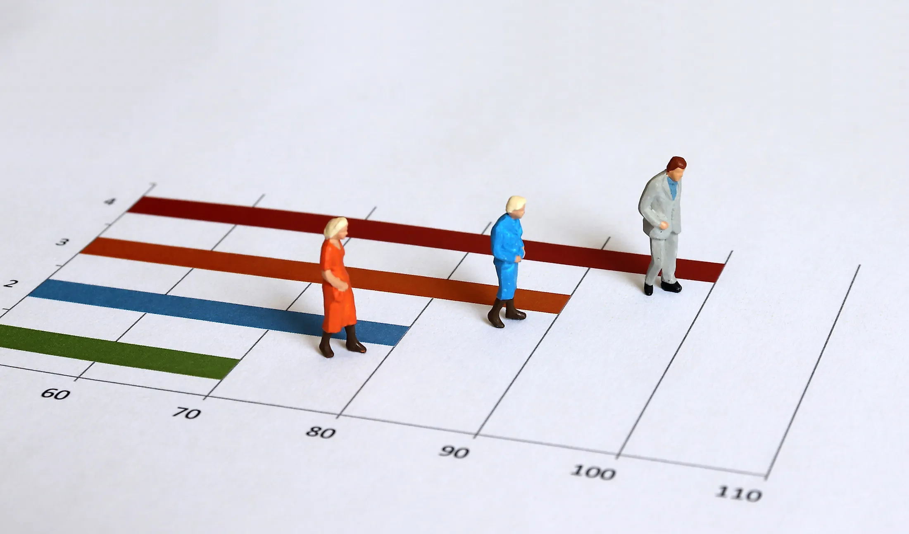

For this project I used several techniques to clean the data and then used pivot tables and charts to visualize my conclusions. I found that Shelby Transportation had the most delays, Mondays had the most delays and breakdowns, and much more.

After cleaning and exploring a dataset on global life expectancy. I found strong correlations between BMI, GPD and the average life span. I also discovered which countries have improved their life span the most and which had improved the least. Finally, I found possible reasoning for the decreases in life span based off trends in the data.

After being given a dataset by an imaginary manger to show how his employees are doing, I created a dashboard in Tableau to see how his employees are performing as a whole and how each employee is doing individually. I found which employee was resolving the most issues with customers, who was answering the phone most frequently and much more.